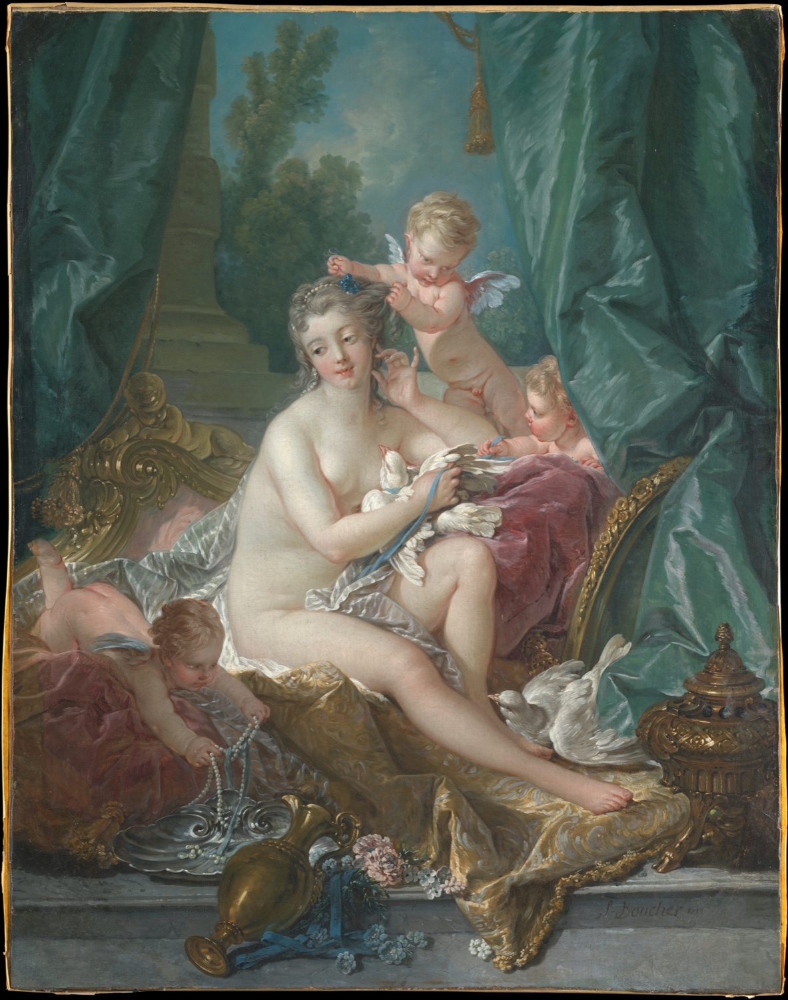
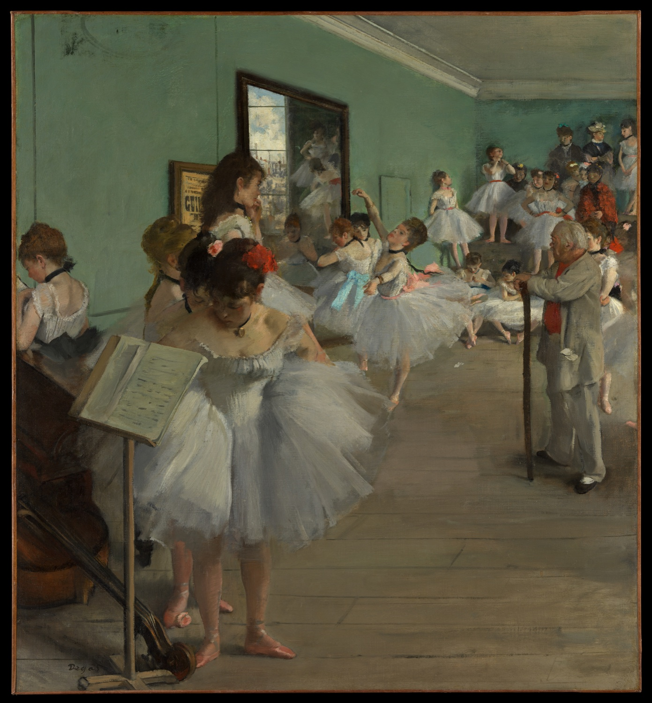
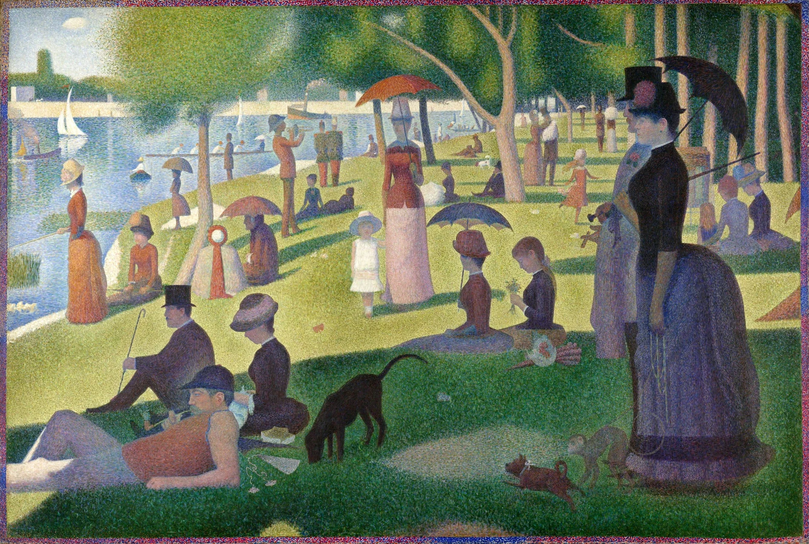

一间巴洛克教堂和一间洛可可沙龙，都可能有曲线、金饰和繁复的雕刻。走进前者，你容易被光线和人物的动作引向某个中心。走进后者，视线可能沿着镜框、灰泥花饰和墙板边缘，在房间里来回游走。两种风格用了不少相似的形式，却安排了截然不同的观看经验。
同样的区别也出现在看似简洁的作品之间。马列维奇在白色画布上画一个略微倾斜的白色方形，贾德把同样大小的金属盒等距装在墙上。前者让人注意画面中细微的色差与倾角，后者让人注意盒子之间的距离、墙面和自己站立的位置。把它们都归为“极简”，就会错过两件作品各自值得看的地方。
辨认视觉风格，可以从一个问题开始：作品用什么办法，让我们这样看？ 构图让视线集中还是分散？光线在塑造体积、表现天气，还是突出一个动作？色彩在描述对象，还是已经能独立组织画面？画布、金属、镜面与玻璃又怎样改变我们和作品的关系？
这篇文章沿时间线选取有代表性的绘画、雕塑、建筑、版画、摄影和器物。主线从欧洲早期近代艺术出发，进入十九世纪的法国与欧洲，再延伸到二十世纪欧美艺术和跨国交流。年代是辨认先后的坐标。很多风格曾同时存在，在不同地区和媒介中也有不同的发展速度。
一张时间表，先认清它们大致在什么位置
| 大致时段 | 本文涉及的风格与倾向 | 观看时先留意什么 |
|---|---|---|
| 15—16 世纪 | 文艺复兴、样式主义 | 透视、体积、人物之间的关系，以及这些规则怎样被拉伸 |
| 约 1600 年起至 18 世纪前期 | 巴洛克 | 光线怎样集中，动作怎样冲出画面，作品怎样纳入观众 |
| 18 世纪上半叶至中后期 | 洛可可 | 曲线怎样沿表面展开，色彩、装饰与室内尺度怎样配合 |
| 18 世纪后半叶至 19 世纪前期 | 新古典主义、浪漫主义 | 古代典范、清楚的轮廓，以及历史事件和自然体验如何入画 |
| 19 世纪中叶至末期 | 现实主义、印象主义、后印象主义 | 普通人如何入画，光色如何变化，画家如何重新组织所见 |
| 约 1890 年代至 20 世纪初 | 新艺术运动 | 自然曲线怎样进入字体、器物、建筑和城市设施 |
| 20 世纪初至两次世界大战之间 | 野兽派、表现主义、立体主义、几何抽象、达达、超现实主义 | 色彩、视角、物件和图像之间的关系如何被重新定义 |
| 1920—1930 年代 | 装饰艺术、包豪斯与现代建筑 | 几何形式怎样服务于不同的材料、用途和生活想象 |
| 1940—1970 年代 | 抽象表现主义、波普艺术、极少主义、观念艺术 | 身体动作、商品图像、物体尺度和作品观念如何进入艺术 |
| 1960 年代后期至 20 世纪末 | 后现代主义相关实践 | 历史样式、流行文化与媒体图像怎样被引用、重组和质疑 |
一、文艺复兴与样式主义：可靠的空间，也可以容纳难解的画面
理解巴洛克以前，可以先看文艺复兴画家怎样让画中世界成立。线性透视用方向一致的线条组织远近。明暗把平面的头、手和衣褶塑造成有体积的形体。人物的视线、手势和彼此之间的距离，又把各个形体连成一件正在发生的事。这些方法可以协同工作，也可以由画家选择其中一两种来主导画面。
达·芬奇的《岩间圣母》是很好的起点。岩洞里的几个人物聚得很近，头部和伸出的手形成几处相互照应的停顿。远处则用偏冷、偏浅的颜色和模糊的边缘拉开距离。远山并没有因为画得精细才显得遥远，其轮廓恰好比近处软。伦敦国家美术馆将这种处理称为空气透视。在画里，人物所在的暗处和远处发亮的开口互相衬托，空间因此既有深度，又带着难以完全看清的神秘感。 伦敦国家美术馆《岩间圣母》专题
到了十六世纪，已有的造型技巧也可以用来让观看变得不安稳。布龙齐诺的《维纳斯与丘比特的寓言》里，肌肤光洁，轮廓讲究，人物却互相叠压，肢体转向各不相同。观众容易认出其中几个人物，整个场景的含义却仍有歧义。精致的画法使这些复杂关系更突出。样式主义常让人同时感受到两件事：画家掌握了严格的造型技艺，也有意把姿势、比例和叙事推到不那么自然的位置。 伦敦国家美术馆《维纳斯与丘比特的寓言》
两幅画都重视精确的造型，给观众的任务却已经不同。《岩间圣母》让人留意形体怎样在空气和阴影中出现。布龙齐诺让人沿着过分精致的身体、手势和表情寻找关系。后来辨认艺术风格时，这个区别很有用。画得光洁、逼真或细致，只告诉了我们技法的一部分。更值得追问的是，画家借这套技法安排了怎样的观看过程。
二、巴洛克：光线、动作和空间怎样把人拉进现场
卡拉瓦乔的《以马忤斯的晚餐》画的是门徒认出复活的基督的一刻。餐桌贴近画面下方，果篮靠着桌缘，一位门徒的手臂横向伸开，另一位撑着椅子，身体像是正要站起来。画家选择的时刻很短，却通过桌沿、手臂和椅子的方向，让观众感到动作有可能延续到画外。 伦敦国家美术馆《以马忤斯的晚餐》
仔细看光线，会发现它做了两件事。它把面孔、手和桌布从较暗的背景里提起来，同时让每个人的反应有了先后。眼睛可以先落在桌旁较亮的面孔上，再顺着伸开的手臂被带向两侧。卡拉瓦乔还画出了寻常的衣服、餐具和食物。神圣事件发生在一张有分量、有摩擦、有东西快要掉下来的桌子旁，观众几乎能估计自己离桌沿还有多远。这是巴洛克画面的一种力量：让观看有位置，让事件有眼前发生的感觉。
贝尼尼在罗马科尔纳罗礼拜堂做了类似的事，只是换了媒介。《圣特蕾莎的狂喜》中的人物用大理石雕成，身后的镀金光束强调向下照射的方向，隐藏的采光让中心雕塑显得格外明亮。两侧还安排了像剧院包厢一样的空间，科尔纳罗家族成员的雕像被放在那里。参观者站在现实的礼拜堂里，能看到中心事件，也能看到作品已经为他们安排了别的观看者。雕塑、建筑、光线和观众的位置共同组织了这一幕。 罗马旅游局贝尼尼作品与地点专题
巴洛克也有不同的地方版本。伦勃朗的《夜巡》来自荷兰城市民兵连队的群像传统。它没有给每个人平均分配光线和位置。前方两名军官一暗一亮，女孩的亮色在拥挤人群中意外突出，枪杆、旗帜和人物姿态把群像变成一个正在集合、准备行动的场面。卡拉瓦乔的室内宗教场景和伦勃朗的民兵群像相距甚远，形式上却有相通的问题：一群人都在，画家怎样让我们先看到某些人，再感觉到整群人的动势？ 荷兰国立博物馆《夜巡》研究专题
因此，深色、金饰和强烈明暗都可以作为观察线索，单看任何一项都不够。区分一幅巴洛克作品时，可以看它怎样把多个形式手段拧到同一个动作或事件上。对卡拉瓦乔来说，伸出的手和贴着桌沿的果篮在做这件事。对贝尼尼来说，建筑、雕刻和现实的光也参与其中。
三、洛可可：相似的曲线，为什么产生了不同的轻盈感
十八世纪的法国洛可可尤其适合从室内环境理解。灰泥装饰在墙上延伸，镜框和壁板接续曲线，花叶、贝壳状纹饰和卷涡纹在不同表面上反复出现。房间的视觉兴趣分布在多个位置。坐在近处可以看一段雕花，转身又能透过镜面看见对面墙上的纹样。相较于以远看为主的大型纪念性作品，这样的空间还鼓励人在较近距离停留和游看。

布歇的《维纳斯的梳妆》原是一件门楣上方的装饰画。人物的肌肤、绸缎和小爱神分布在相近的亮度里，背景的树叶和深色布料把这组浅色包住。画面有明显的主角，也很在意从主角向周围过渡的过程。你可以留意布料的褶皱如何接到人物的手臂，小爱神的姿势怎样把视线带回人物。神话为画面提供了题材，材质的柔软、身体的姿态和装饰的曲线共同决定了它的观感。把这幅画想回门楣的位置，也更容易明白它为什么要同房间里的其他装饰相处。 大都会艺术博物馆《维纳斯的梳妆》
弗拉戈纳尔的《秋千》同样有强烈的斜线和戏剧性动作。穿粉裙的女子荡至半空，一只鞋飞了出去。左下方有人仰视她，右后方另一个人牵动秋千。几条方向线交汇到裙摆，再从飞出的鞋、石雕和树丛向外散开。粉红色和偏冷的绿蓝色之间有很鲜明的对比。它仍然让人感到轻盈，因为人物的动作短促，裙摆和树叶像被同一阵风搅动，整件事的观看趣味带着游戏、遮掩和窥见。洛可可可以浓艳，可以暗，也可以有明确的视觉中心。 浅粉色只是它可能采用的一种颜色。 华莱士收藏馆《秋千》专题
走进慕尼黑宁芬堡宫园内的阿玛琳堡，再看一次洛可可。镜厅里，镜面成倍扩大了门窗和装饰的可见范围，银色纹饰铺在偏浅的墙色上，灰泥造型把镜框周围与墙面连在一起。人一移动，反射就会变，房间很难被一个固定视点看完。这里的“轻盈”来自反射、边缘和重复，单看墙面选了什么颜色，解释不了整个房间。 巴伐利亚宫殿管理局阿玛琳堡介绍
把贝尼尼礼拜堂、弗拉戈纳尔的画和阿玛琳堡放在一起，最实用的区分是看视线最后停在哪里。礼拜堂以向中心集中的光和建筑框架建立一个重要时刻。《秋千》也有中心，但视线会在几个人物之间往返。镜厅则把这种游移铺开到整个室内。三者都能精心控制目光，差别在于它们希望人怎样停留。
四、新古典主义：线条怎样把一个选择变得明确
十八世纪后半叶，古代艺术与历史重新成为许多欧洲艺术家的参照。新古典主义常见清楚的轮廓、稳定的分组和简洁的空间。不过，这些形式并非单纯来自对古代器物的模仿。历史题材可以让画家讨论他们自己时代的问题，画面如何组织人物，往往也表明作品希望观众怎样理解眼前的行动。
雅克-路易·大卫的《荷拉斯兄弟之誓》尤其清楚。背景的三个拱门划分出几个区域。左边的兄弟伸臂宣誓，中间的父亲举剑，右边的女子和孩子聚在一起，身体多向下弯曲。拱门把他们分开，伸出的手和举起的剑又在中间形成联系。视线可以先认出誓言，然后移到另一侧，看见同一件事给家庭带来的代价。 卢浮宫《荷拉斯兄弟之誓》馆藏页
这幅画的克制感，有一部分来自取舍。背景建筑退到后面，地板帮人确认站位，衣服轮廓让姿势清楚可辨。画家把可供观看的细节集中在手臂、剑和彼此区别鲜明的身体姿态上。观众容易读懂发生了什么，也能看见不同人物如何面对同一件事。大卫借古罗马故事讨论公共责任、牺牲和家庭情感，不能把画中的意思全部折叠进“古典的比例很工整”。 卢浮宫大卫展研究资料
文艺复兴、新古典主义和后来的古典复兴建筑都有机会使用古代题材、对称和柱式。辨认时可以从形式背后的任务入手。达·芬奇借明暗和空气让身体坐落在一个可信的自然空间里。大卫在这幅画里用清楚的分区把人物的选择摆出来。共享的形式传统很长，而具体作品在问什么，仍要到画面中去找。
五、浪漫主义：让观众面对一件更大、更难把握的事
德拉克洛瓦的《自由引导人民》描绘法国 1830 年七月革命。举旗的自由化身位于高处，前景倒下的人物形成宽阔的底部，活着的人向上、向前推进。画面的总体轮廓近似三角形，内部却充满横斜的武器、不同的身体方向和飘动的旗帜。远处建筑被烟雾吞没一部分，观众能看到队伍向前，却很难一眼厘清事件的全貌。作品用清楚的整体构图容纳了局部的混乱。 卢浮宫《自由引导人民》馆藏页
和《荷拉斯兄弟之誓》并看，两者都可以把历史事件安排得庄重，也都让手势承担关键作用。大卫画中几组人物之间留有可辨认的界限，举剑把行动定格在一个清楚的决定上。德拉克洛瓦画里，活人和死者、寓言人物和现实中的参与者挤在同一片空间，画面的力量来自他们同时向观众逼近。两件作品的差异落在组织方式上。一个让人看清决定是怎样被做出的，一个让人感到卷入历史事件是什么样。
浪漫主义也可以非常安静。弗里德里希的《雾海上的漫游者》把一位背朝观众的人放在近处的岩石上。脚下的石头有明确的边缘，远方则被雾拆成若隐若现的山峰。你可以借他的站位进入画面，却看不到他的脸，也难以计算雾后究竟还有多远。人物站在中央，画面真正占去大部分空间的却是他所面对的东西。 汉堡美术馆《雾海上的漫游者》
这幅画能帮助人理解浪漫主义里常见的“崇高”。高山、风暴和雾海可以令人着迷，因为人的观看和估量在那里遇到了限度。德拉克洛瓦用人群和烟雾取得这种不完全可掌握的感觉，弗里德里希用背影和远景得到另一种。浪漫主义的强度有时来自动作，有时来自观众看了很久，仍然无法把眼前的世界看尽。
六、现实主义：普通人的生活为什么值得占据一整面墙
十九世纪中叶，库尔贝的《奥尔南的葬礼》把一个地方小镇的葬礼画在一块巨大的画布上。在当时的法国绘画制度中，这种尺度常与历史画或纪念性事件相连，而库尔贝把它交给了在场的居民。画中人物大致沿水平方向排开，衣服偏深，几处白色和红色在队列中亮起来。前景的墓穴切入画面，没有给中心腾出通常留给英雄的高位。 奥赛博物馆《奥尔南的葬礼》馆藏页
站在这幅画前，可以先找找谁最像传统历史画的主角。你会发现，画家让不少人都值得被看见，却没有给出一个可以迅速概括所有人的单一姿态。有人注视仪式，有人站着等候，人的反应并不整齐。墓穴又在很靠近画面下沿的位置，观众的注意力既落在参加葬礼的人身上，也落在他们共同面对的那块空地上。
“现实主义”容易被误解为“画得像照片”。在库尔贝这里，更关键的是题材、尺幅和观看距离之间的关系。同一场葬礼，如果只画成一幅小型风俗画，观众可以把它当作一则地方见闻。放到需要正面面对的巨大画布上，小镇居民获得了通常留给重大历史人物的尺度。这是取舍和组织带来的效果。即使一位画家对细节作了删减，或使用厚重的用笔，他仍然可以用现实主义的方式重新安排艺术应该看见什么。
还可以把这幅画与《自由引导人民》比较。前者以队列和在场感维持重量，后者借向前推进的构图使人感到事件的爆发。两幅都可以画普通人，也都能面对公共生活。它们的区别要从这些普通人被放在什么样的场景里、以什么形式受到观看来读。
七、印象主义：画家开始反复问，光线怎样改变眼前的东西
莫奈的《印象·日出》画的是勒阿弗尔港。远处的港口设施隐在灰蓝色雾气里，近处几条小船用更深的颜色点出，橙红的太阳和水面倒影落在大面积的冷色之间。船和码头能被认出来，画家的注意力尤其集中在这一刻它们如何显现。经过这层空气，远处的建筑看起来变轻了，轮廓也变得不可靠。同样一个港口，到了正午可能完全不是这幅样子。 马摩丹莫奈博物馆《印象·日出》馆藏页
早期绘画也观察光色，达·芬奇的远山就是一例。两张画相比，差别在于这些观察在作品中占多大分量。《岩间圣母》的空气透视服务于人物与远景之间的空间深度。《印象·日出》里，雾和光直接决定哪些对象会被看清，也构成了作品最醒目的内容。观看一幅印象主义绘画时，可以先找最清楚与最模糊的地方，再问这种变化究竟来自距离、光线、空气，还是画家有意保留的笔触。

德加提醒我们，印象主义的展览与实践还包括城市室内、排练和工作现场。《舞蹈课》里，斜向拉开的地板让房间显得开阔，人物沿空间边缘聚散。几位舞者在等候、调整姿态，视线不必一直停在一位正在完成标准动作的主角身上。画家让观众注意正式表演之外的片刻，也让画面边缘看起来像截取自一个仍在延续的现场。它的现代感很大程度来自站位、裁切和人物分布。 大都会艺术博物馆《舞蹈课》
十九世纪后半叶进入欧洲流通的日本版画，也为部分欧洲画家提供了不同的构图参照。偏置的人物、大块相对平的颜色、被边缘截去一部分的对象，都可以让欧洲艺术家重新想象一幅画像怎样成立。日本版画也有自己的出版市场、题材传统和制作分工，不能仅用它后来怎样影响法国绘画来定义它。这次交流至少说明，风格的发展途中，艺术家也会向同时代的其他文化借用观看办法。 大都会艺术博物馆「日本主义」专题
八、后印象主义：同样从所见出发，画面可以走向完全不同的地方
“后印象主义”是一个便于回看十九世纪末艺术的总称。它能把几位从印象主义留下的问题继续往前走的画家放到一起，但他们各自在做的事差异很大。修拉把颜色拆成细小的并置单位，塞尚反复衡量物体与背景之间的结构，梵高则让笔触的方向和色彩的力度变得难以忽略。把三人放在一起看，才能理解这个名称涵盖了多宽的范围。 纽约现代艺术博物馆「后印象主义」

《大碗岛的星期天下午》适合分两种距离看。退远一些，会先注意画面里的明暗分区、岸线和人物的直立轮廓。右边靠前的男女和左边开阔的水面彼此制衡，不少人物各自安静地占据一块地方。凑近以后，草地和衣服会分解成许多相邻的色点或短笔触。大面积的颜色从远处看比较统一，近处才显露出内部的差别。修拉为了这幅画做过多张草图，还修改过一些人物的轮廓。画面既要容纳现代人的休闲活动，也要像一条经过安排的浮雕饰带那样具有秩序。 芝加哥艺术博物馆修拉专题 · 馆方开放藏品记录
塞尚的《苹果静物》可以从桌面看起。桌布、果实和器物都很熟悉，桌面及物体边缘的方向却不容易归入一套完全一致的透视。画家通过一块块不同的颜色让苹果鼓起来，再让苹果和周围的布、桌面互相支撑。用眼睛沿桌缘走一遍，再沿一只苹果的轮廓走一遍，会发现这幅画在每个局部都让人看得很具体，而这些局部组成的空间保留着轻微的不稳定。 纽约现代艺术博物馆塞尚《苹果静物》
梵高的《星月夜》给笔触另一种任务。天空里的笔触会旋转和延长，星星周围的短线向外放射，前景柏树则以深暗、近乎竖直的形状伸上去。画下方的村庄相对安定，上方的天空持续活动。观众仍能认出树、村庄和天上的星体，但作品的强度还来自这些方向之间的碰撞。由此可以看到，十九世纪末的画家已经在一幅具象作品里，为笔触、色彩和画面结构争取到很大的主动权。 纽约现代艺术博物馆梵高《星月夜》
九、新艺术运动：装饰怎样从物体表面长进物体结构
约在十九世纪末至二十世纪初，新艺术运动在欧洲和其他地区以不同名称、不同样貌展开。海报、玻璃、首饰、家具和建筑都能体现它的追求。在许多作品里，线条拉得很长，带有藤蔓、花茎、昆虫翅膀一类的形态。看这类作品时，最值得留意的是线从哪里开始，又在哪里经过了原本属于另一个部分的边界。
吉马尔设计的巴黎地铁入口很清楚地表达了这种关系。入口两侧的铸铁构件一路向上弯曲，灯具像从茎端长出来，标牌与支撑它的框架也共享一套弯曲的轮廓。行人可以从远处看见入口，又能在近处认出交通设施上的文字。造型富于装饰，构件却能以铸铁制作和组合。现代城市的公共设施，在这里成为这种视觉语言的一部分。 纽约现代艺术博物馆吉马尔地铁入口 · 美国国家美术馆馆藏说明
洛可可也有花叶、曲线和不同材料互相呼应的空间，因而容易与新艺术混淆。看阿玛琳堡时，观察的是镜框、墙面和灰泥装饰怎样相互延伸。看巴黎地铁入口时，观察的是同一条曲线怎样从立柱变到灯具，再和标牌接成一个建筑构件。后一个例子属于新技术和新城市设施正在改变公共生活的时期。工艺和工业制作在同一件作品里相遇，使“自然形态”有了另一层意思。 维多利亚与阿尔伯特博物馆「新艺术运动」专题
十、野兽派与表现主义：颜色偏离对象以后，可以做什么
马蒂斯 1905 年的《戴帽子的女人》仍是一幅肖像。头部、帽饰与肩颈关系很明确，脸上却出现了并非日常肤色的绿、黄和红。可以试着沿着脸的中线看这些颜色。绿和红有时分别承担明暗或冷暖关系，有时又同帽子上的色块、后方的背景发生呼应。脱离自然肤色以后，颜色获得了组织整张画的能力。它能让原本属于脸的一块颜色，和远处属于背景的一块颜色变得相关。 旧金山现代艺术博物馆《戴帽子的女人》
野兽派常以强烈色彩著称。若只把色彩加强，一张画也可能变得平均，每个地方都在争抢注意。马蒂斯让相邻的颜色互相推挤，又用帽子、面孔和肩部的轮廓使它们仍能被读成一个人物。画里的大胆取决于布置。哪里可以突然跳到另一种颜色，哪里需要一条轮廓重新把色块收拢，都是具体的绘画决定。
德国表现主义画家基希纳的《柏林街景》也用醒目的颜色，但人物的形状和城市空间同样重要。细长的身体，尖锐的脸，挤在一起却缺乏亲近感的人物，让满是行人的街道显得紧张。画面里的鞋、帽、衣摆和斜向线条一起往前顶。颜色从现实中偏离后，与这些扭曲的形体合作，把一种都市感受压进构图里。 纽约现代艺术博物馆基希纳《柏林街景》
因此，野兽派和表现主义确实有重叠的视觉手段。一个可操作的区别是：在马蒂斯这件作品里，先看色块怎样组成画面。在基希纳这件作品里，继续看色彩、人物变形和空间压缩怎样共同改变一条街给人的感受。这样的比较也适用于别的作品。只要能说清颜色离开了哪一种写实约束，又怎样同其他部分配合，就比用“大胆”两个字概括得更多。
十一、立体主义：一个物体可以在同一张画里怎样被看见
我们通常从一个固定位置看见桌子、乐器或一个人的脸。看久了，又会绕到旁边，先前看过的部分并未完全离开记忆。二十世纪初，毕加索和布拉克等人把这种观看的不稳定带进绘画，让一件东西的不同侧面、边缘和形状能够同时出现在画面里。
毕加索的《亚维农少女》常被放在立体主义形成的前史里。人物所在的空间变得又浅又硬，躯体和衣褶像被切成若干相邻的面，人物之间的空处也有近似的锐利边缘。右边蹲坐的人物，身体的朝向与面孔朝向尤其难按单一视点来理解。这件 1907 年的作品打开了之后的一些问题，到了 1911—1912 年的《我的美人》，人物和乐器已经进一步瓦解成密集、交错的几何面。 纽约现代艺术博物馆《亚维农少女》 · 毕加索《我的美人》
《我的美人》很适合说明，立体主义的重点比“像碎玻璃”更具体。画家压低了色彩的强度，让线的方向、形体之间的接缝和深浅变化承担更多工作。一段形状看着有点像乐器的一部分，挨着的另一段却又可能让人读成身体或背景。观众开始依靠画面上的线索，在平面中重新拼出对象。字母、可辨认的细部与难以辨认的碎片并列存在，让观看在识别和重新判断之间来回。
还可以拿塞尚的苹果和立体主义对照。塞尚的桌子依然可以作为桌子整体被看见，轻微的视点差异扰动了它的稳定。到《我的美人》，这些差异已经改变了整幅画怎样成立。一个物体可以从几个角度分别提供信息，再由画家挑选、压缩和重排。立体主义让我们看到，绘画并不只有一条通向真实的路，画面还可以记录观看本身是怎样发生的。
十二、几何抽象：形状、边缘和间隔开始承担画面的内容
到了二十世纪一〇年代，几何抽象在不同地方出现。马列维奇的至上主义、康定斯基的抽象绘画，以及荷兰风格派相关艺术家的探索，都曾把可识别物体让到一旁。但画家为什么这样做、他们让什么接过对象的位置，各不相同。对观众来说，有一个简单的入口：先用能在画面里验证的词描述它，例如倾斜、交叉、偏离中心、边缘接近和间距变化。
马列维奇的《白上白》画的是两个有细微差别的白色区域。内部的方形略微倾斜，在画面中偏向一侧。因为颜色很接近，眼睛需要停留一会儿，才看得清内部形状和背景的界限。边缘变得重要，是因为画家把许多平时占据注意力的差别收掉了。小小的倾角在这幅画里会引发格外明显的动势。它既像要离开背景，又始终留在画布上。 纽约现代艺术博物馆马列维奇《白上白》
康定斯基的《构成第八号》同样大量使用几何形式，观看却活跃得多。大小不同的圆、斜线和角形相隔一段距离，几处线条交叉得很密，另外一些位置相当空。眼睛会在强烈的交叉点和孤立的大形之间切换。画面让人感到时而加速、时而停顿，部分原因就在于间距和大小的变化。康定斯基的几何形帮助画面建立复杂的节奏，马列维奇则借稀少而接近的形体放大细微差异。 古根海姆博物馆康定斯基《构成第八号》
蒙德里安晚期的《百老汇爵士乐》还能补充一种观看经验。横竖方向依然明确，连续的线却被一块块小色段切分，交点和局部较大的色块会改变目光前进的速度。它属于较晚的作品，放在这里能看到一种视觉语法经过多年探索后还会继续变化。几何抽象里面既有宁静，也有密集的动作。笼统说它“理性”，容易漏掉它在色彩、间距和节奏上最可感的部分。 纽约现代艺术博物馆蒙德里安《百老汇爵士乐》
十三、达达与超现实主义：熟悉的东西，到了陌生的地方
达达在第一次世界大战前后形成，留下了拼贴、表演、出版物和现成品等多种实践。哪怕对它的历史背景还不熟悉，也可以从杜尚的《泉》读进去。1917 年，一件工业生产的小便器被改变观看方向，以署名作品的方式提交给展览。原件后来不存，费城艺术博物馆保存的是 1950 年的复制版本，并展出与当年争议有关的资料。 费城艺术博物馆《泉》馆藏页 · 《杜尚与〈泉〉的争议》展览资料
《泉》最值得仔细想的是，看待物件的方式如何改变。放在原来的地方，人主要按照用途识别它，甚至不会留意轮廓。转动方向，签上名字，再送进艺术展览的审议程序，同一件东西便有了另一组关系。它的选择、命名、位置和展览制度都进入了作品。这样的实践很难只用颜色和形状辨认，因为发生变化的还有什么东西能够成为艺术，人凭什么这样判断。
超现实主义也会让熟悉的东西变陌生。达利的《记忆的永恒》中，怀表靠到台沿和树枝上，像软物一样垂下来。背景的岩石、远处水面和阴影仍画得清楚，空间也给人一种可以进入的感觉。正因为其他部分相当可信，变软的怀表才显得异常。观众仿佛能触到它，却无法按普通物体的经验想象它是什么材质、如何工作。 纽约现代艺术博物馆达利《记忆的永恒》
这两个例子有一个共同的起点：观众能认出对象，然后发现原来的认识不够用。杜尚让日常物件进入新的展示语境。达利在画中改写物理经验，又让画面保持足够逼真。达达与超现实主义还有许多别的做法，这两件作品已经足以说明，一件艺术品的陌生感可以来自展览里的位置，也可以来自画中事物之间原本不可能出现的关系。
十四、装饰艺术与包豪斯：二十世纪的几何形式怎样走向两个方向
新艺术运动之后，装饰语言没有消失。后来被称作装饰艺术的一批作品，在 1920—1930 年代借助几何、光泽和精细工艺形成鲜明形象。1925 年巴黎的现代装饰与工业艺术国际博览会，是理解这一历史范围的重要坐标。家具、珠宝、海报和建筑都能看到相关表达。边缘趋向清楚，装饰常被压成折线、放射线、阶梯形和重复的几何图案。 维多利亚与阿尔伯特博物馆「装饰艺术」专题
把它与新艺术的地铁入口比较，“有装饰”是共享的特点。吉马尔的立柱弯曲并长出灯具，几部分顺着同一方向连接。典型的装饰艺术器物则常把表面分成边界清楚的段落。图案服从对称轴，平滑的漆面、金属配件或木材纹理让光在边缘留下醒目的反射。装饰艺术也有自然题材，动物、花卉和日光都能出现，只是它们常被提炼为更整齐、更容易重复的图形。它的几何可以表现精工和华丽，还可以让人联想到现代机器的速度与精度。
包豪斯与装饰艺术在时间上有重叠。包豪斯是一所学校，1919 年创办，后来经历不同城市和不同校长的阶段，在纺织、出版、器物、建筑等方面都有探索。以格罗皮乌斯设计的德绍校舍为例，工场一侧的大面积玻璃立面首先让人看到建筑如何围合工作空间。不同用途的体量彼此连接，开窗与空间的实际需要有关，室内外的关系也成了建筑外观的一部分。它可以被读成建筑怎样组织教学与制作的一种回答。 包豪斯档案馆常见问题 · 德绍校舍档案
两者都能采用方形、圆形、金属和玻璃。装饰艺术可以借几何强化一件物品的外表和制作质感，包豪斯相关实践往往让几何去协调材料、构造、生产或使用。实际历史比这个对照复杂，包豪斯也做有很强图案感的纺织品，装饰艺术也进入工业生产。将它们放在一起，更有用的问题是：几何在这件作品里做了什么？它装点表面，划分体量，表达速度，还是让人看清构件之间怎么连接？
十五、抽象表现主义：一张画可以用身体动作和观看距离组织起来
第二次世界大战后，以纽约为重要中心的抽象表现主义形成了不同的实践。波洛克的《第一号，1950》是一幅五米多宽的大画。他把画布放在地面，用倾倒、甩动等方式把颜料施加上去。线条彼此跨越，有的细，有的变成颜料聚集的粗块。画面没有一个像传统人物画那样明显的中心，观众会在多个局部之间移动目光。 纽约现代艺术博物馆波洛克《第一号，1950》
大尺幅是这件作品的要点。缩图会把线条压成一层密集的纹理。到了原作的尺度，视线能在比较长的距离内追一根线，看到它被另一根线压过去，又突然落入露出底色的地方。颜料有不同的厚度和光泽，身体移动时也会更容易认出来。抽象在这里具有现实的材料感，画面留下了制作的速度、重力和触感。
罗斯科的大色域作品也可以让人停留很久，方式却不同。以纽约现代艺术博物馆收藏的《第十号》为例，宽阔的色带横向展开，色区交界处保持柔和。观众可以跟着某个颜色上方的边缘慢慢看过去，再注意它怎样在相邻颜色旁改变感受。波洛克的作品鼓励人沿着线迹移动，罗斯科的画则给人时间去感受色块的相互渗入与分离。抽象表现主义中同时有强调动作痕迹的绘画，也有讲究色域、尺度和停留的作品。 纽约现代艺术博物馆罗斯科《第十号》
理解这一时期的作品，常常要把身体带回观看。站得多远才看得见全画？靠近了才会发现什么？眼睛是被一条线引着走，还是在一块颜色上逐渐适应？一幅画的视觉形式也包括它要求人花多少时间、占据怎样的位置。单张缩略图可以帮助辨认作品，能够交代的观看方式终究有限。
十六、波普、极少主义与观念艺术：重复出现了三种不同的用法
1962 年，安迪·沃霍尔完成了由三十二张画布组成的《金宝汤罐头》。画布以同一种商业包装为基本形象，不同口味的文字带来局部差异。单张看是一只熟悉的罐头，放在一起便有了货架、陈列、库存或系列产品的意味。这些早期罐头画是绘画作品，不能一概说成后来的丝网印刷。它们已经用重复和商业标签，让观众反过来注意日常消费图像给人留下记忆的方式。 纽约现代艺术博物馆《金宝汤罐头》 · 馆方关于三十二张画布的陈列研究
贾德 1967 年的《无题》也运用了系列和重复。等尺寸的金属盒沿着墙面向上安置，间隙和盒子高度相等。远看，空隙和物体交替构成节奏。走到侧面，会注意到盒子伸出墙面的深度、漆面与裸露金属的差异。展厅天花板高度有变化时，安装的单元数也可能相应调整，等距关系仍然重要。这里的留空和形体共同组成了作品的一部分。 纽约现代艺术博物馆贾德《无题》
波普艺术和极少主义都能容纳重复、工业制作的外观和鲜艳颜色。沃霍尔重复的是有商品历史、品牌辨识度和日常用途的图像。贾德重复的是具有特定材质、体积和间距的物体，观众还可以走到不同位置去看。把盒子理解为消费符号，或者把罐头理解成几何单元，都能引出一点联想，但容易偏离两件作品中真正决定观看的安排。比较时要先说清楚，被重复的是商品图像，还是空间中的同一种物件。
科苏斯的《一把和三把椅子》也在同一处展示三个彼此相关的东西：一把实体椅子、一张拍摄这把椅子的照片、一段词典对“椅子”的定义。人能坐在椅子上，能看照片识别椅子，也能通过定义理解一整类椅子。三个部分各自提供不同的信息，作品请人去想它们之间的关系。这里重要的安排不是许多相同东西不断出现，而是同一个对象通过三种方式呈现。观念艺术由此把问题推进到作品的定义、描述和成立条件上。 纽约现代艺术博物馆科苏斯《一把和三把椅子》
十七、后现代主义：历史和流行文化怎样变成可以重新使用的材料
“后现代主义”涵盖建筑、器物、视觉艺术等许多领域，各自的用法并不完全相同。维多利亚与阿尔伯特博物馆曾以约 1970—1990 年作为梳理设计领域后现代主义的重要展览时段。在这一范围里，艺术家和设计师更经常让作品显露自己的引文：一个传统屋顶的形状、一种廉价的工业饰面、一套观众从电影里认得的角色姿态，都可以被移到新的地方，改变原有的意思。 维多利亚与阿尔伯特博物馆「何谓后现代主义」
建筑上可以从文丘里为母亲设计的范娜·文丘里住宅看起。正面保留了人们很容易认作“房子”的山墙形象和居中的入口区域，山墙中间却有断开的处理，两侧的开窗也并不按简单的对称排列。远看很快就能认出熟悉的住宅轮廓，近看会发现不少细节在打断对这个轮廓的预期。门、窗和屋面依然属于一座可以居住的建筑，正立面也在利用人们早已知道的一种“房子长相”来交流。 纽约现代艺术博物馆范娜·文丘里住宅模型 · 维多利亚与阿尔伯特博物馆后现代建筑专题
索特萨斯为孟菲斯设计的《卡尔顿》隔断则充分发挥了颜色、轮廓和材料的冲突。斜向伸展的板件组成鲜明的剪影，正面既能被看成置物架，也有点像一件向外张开手臂的雕塑。彩色塑料层压板带着量产材料的表面特征，作品本身却是高度设计过的家具。大都会艺术博物馆指出，斜置的隔板还能托住容易在平直书架上倾倒的书。它看起来有意违背书架的惯常形象，也确实重新安排了如何放书。 大都会艺术博物馆索特萨斯《卡尔顿》隔断
摄影里，辛迪·舍曼的《无题电影剧照》系列更能看出引用的另一面。她让自己出现在仿佛出自旧电影的黑白画面里。服装、取景、视线方向和人物所处的环境，都足以让观众联想到自己见过的电影角色。《无题电影剧照第 21 号》里，人物置身城市建筑之间，头部和视线偏离镜头，照片像从一段还有前因后果的情节里截出。但观众熟悉的是电影的视觉惯例，很难指认它究竟出自哪一部影片。作品借用了电影制造人物类型的办法，也让那些办法变得可观察。 纽约现代艺术博物馆舍曼《无题电影剧照第 21 号》
所以，后现代主义可以很鲜艳，也可以是克制的黑白摄影。它和洛可可都可能显得俏皮，《卡尔顿》与洛可可器物也都能让观看在多个细节之间跳动。真正要记住的是，后现代作品常使我们意识到自己认出了什么，又为什么会认出来。 看住宅时，我们认出了熟悉的山墙。看舍曼时，我们认出了电影角色的样子。作品借这份熟悉感起步，给后来出现的矛盾或偏差留下位置。
十八、怎样把这条时间线变成自己的观看经验
读得越多，越会遇到某件作品同时符合几个风格特征。此时可以先把名称放在一旁，按下面这些问题看一遍，再回到年代、创作者和作品的原始用途。两件作品并排看，差异通常比各自孤立地看更清楚。
| 想比较什么 | 可以并排看的作品 | 动手观察的办法 |
|---|---|---|
| 视线集中还是游移 | 卡拉瓦乔《以马忤斯的晚餐》、弗拉戈纳尔《秋千》 | 找出第一眼的位置，再看眼睛被哪条斜线带走，最后在哪里停下 |
| 构图怎样表现历史事件 | 大卫《荷拉斯兄弟之誓》、德拉克洛瓦《自由引导人民》 | 各用几条线标出群体的边界、手势的交点和人群前进的方向 |
| 色彩怎样组织所见 | 莫奈《印象·日出》、修拉《大碗岛的星期天下午》 | 远看明暗分区，再放大看局部颜色是融在一起，还是以相邻色点并置 |
| 几何形式怎样发生变化 | 马列维奇《白上白》、贾德《无题》 | 看空处在画面中怎样托住一个倾斜形体，又在展厅中怎样成为可测量的间隔 |
| 熟悉的图像怎样被重新理解 | 沃霍尔《金宝汤罐头》、舍曼《无题电影剧照》 | 先说自己认出了什么，再找出是包装、姿态、取景还是重复带来了熟悉感 |
还可以选一件作品，连续看三遍。第一遍只记自己的视线从哪里进、从哪里出。第二遍看形式怎样做到这一点，留意边缘、方向、大小、间隔和颜色之间的关系。第三遍再读馆藏说明，补上日期、媒介、原来的展示地点和曾经面对的观众。最好把第一遍看到的东西写得具体一点。比如“有压迫感”之后，可以补一句“近处的人物被画面边缘切断，远处又看不到清楚的出口”。这样，感受就有了可回去辨认的依据。
同一个形式手段，也可以沿时间线追踪。斜线在卡拉瓦乔那里让身体朝观众伸出来，在《秋千》里让动作绕回人物之间，在《自由引导人民》里成为队伍前进的方向，到了贾德的雕塑面前，连观众自己走到斜侧的动作也会改变所见。追踪的是同一件小事，艺术史却会因此从一串名称变成一连串可以亲眼比较的变化。
最后回到巴洛克与洛可可。如果再遇到一栋装饰繁复的建筑，可以先站在入口看一次，再走到边缘看一次，留意光线是否把你带向某个中心，镜面是否让墙面持续向外展开，装饰跟随的是哪一段建筑构造。名称和年代最终都要回到这些看得见的差别上。等到能指出差别发生在何处、怎样发生，两种风格就会在眼前渐渐分开。